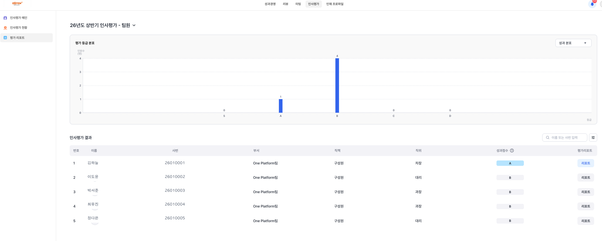
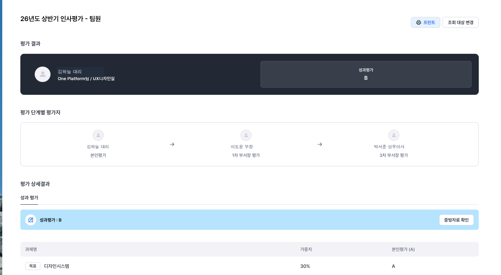
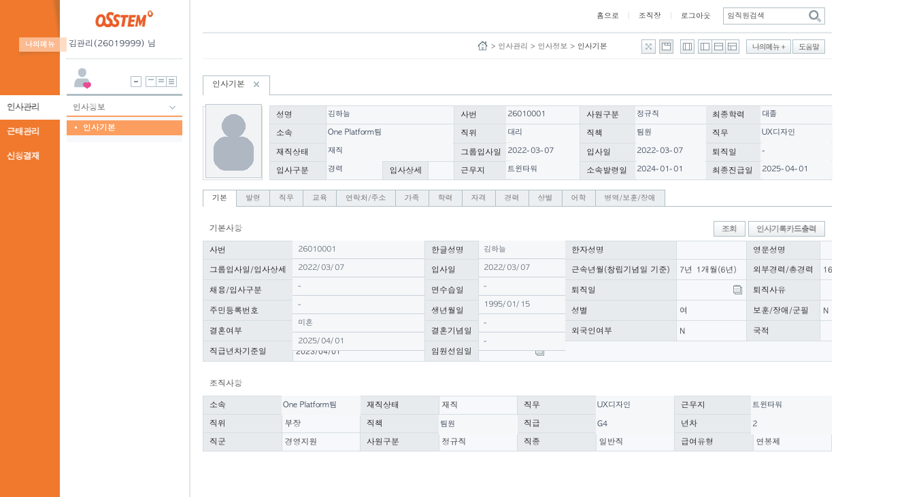
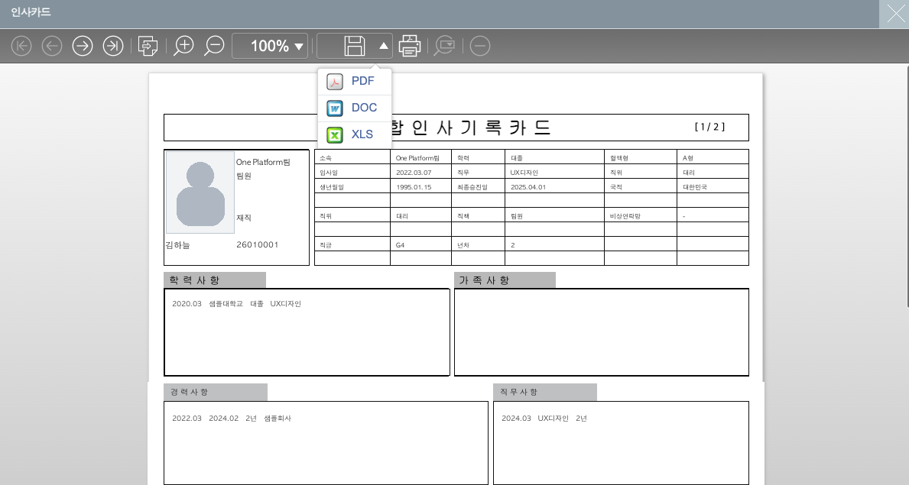

PDF
평가 리포트 PDF
성과등급, 과제, 가중치, 평가 코멘트의 기준 자료입니다.
평가 리포트 PDF와 인사기록카드 Excel을 준비한 뒤 빠른 시작에서 함께 올리세요. 같은 팀원 정보는 다시 입력하지 않습니다.
성과는 평가 PDF가 가장 정확하고, 직급·연차·교육 같은 인사정보는 개인 인사기록카드 Excel을 우선 사용합니다.
성과등급, 과제, 가중치, 평가 코멘트의 기준 자료입니다.
직급, 연차, 발령, 교육, 경력, 상벌 정보를 가져옵니다.
앞선 자료에 값이 없을 때만 5개년 이력의 보조 자료로 사용합니다.
인사평가 시스템에서 팀원별 리포트를 열고 PDF로 저장합니다.
인사평가 시스템 → 인사평가 → 평가 리포트에서 대상 팀원의 리포트 버튼을 누릅니다.

이름과 평가기간을 확인하고 오른쪽 위 프린트 버튼을 눌러 PDF로 저장합니다.

개인 인사기록카드는 인사·성장 정보의 1순위이며 다른 평가 파일이 임의로 덮어쓰지 않습니다.
ehr.osstem.com → 인사관리 → 인사기본에서 인사기록카드출력을 누릅니다.

프린트 팝업 상단의 저장 아이콘을 누르고 초록색 XLS를 선택합니다.

앱 상단의 빠른 시작에서 PDF와 Excel을 함께 선택하고 파일별 팀원 이름을 확인합니다.
업로드 영역을 누르거나 준비한 파일을 한 번에 끌어다 놓습니다.
추가·업데이트·확인 필요 건수와 팀원 이름을 확인합니다. 동명이인은 사번도 확인하세요.
체크한 코멘트만 `코멘트만 모아보기`에 저장되며 면담 기록과 분리됩니다.
가져온 데이터는 두 업무 흐름에 자동 연결되며 같은 정보를 다시 입력하지 않습니다.
아래 항목이 맞으면 바로 평가와 면담을 시작할 수 있습니다.
검색 결과가 없습니다.